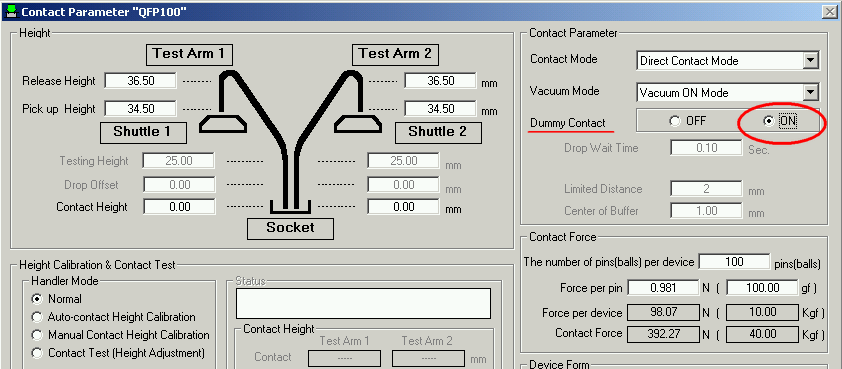

Service History
Subject: During testing the index arm was press 2 times when select the direct contact mode.
Handler Model: NS7000 (S/N:181260 ) STM
Controller: RC520
Date: 27 Dec 2011
Symptom
Reported by customer that during testing the index arm was press 2 times when select the direct contact mode.
Action
-Reported by customer that during testing the index arm was press 2 times when select the direct contact mode.
-Dummy dry run with existing setup file found the abnormal sequence.
-Dummy run with the Epson default setup file the abnormal sequence gone.
-Re-create the new setup file, dummy run. - OK.
-Release handler to production.
Cause
In Contact Parameter, "Dummy Contact" was set to ON, this caused double contact by Index Arm.
